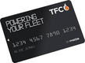

AdBlue
Disponibile in stazione per i veicoli diesel con sistema SCR.
T.Petrol › Stazioni di servizio › Spoleto, S.S. 3 km 123,360
Stazione di servizio Q8 · Spoleto (PG)
Self service, AdBlue, bar tabacchi, locker pacchi H24 e energia dal sole. Una stazione di servizio della rete T.Petrol a Spoleto.

Prezzi self service comunicati all'Osservaprezzi carburanti del Ministero delle Imprese.
Caricamento dei prezzi…
Confronta con le altre stazioni: tutti i prezzi della rete T.Petrol.
Disponibile in stazione per i veicoli diesel con sistema SCR.
Nell'area di servizio.
Ritiro e spedizione con BRT, a qualsiasi ora. Tutti i locker.
Impianto fotovoltaico da 20 kW con 10 kWh di batterie di accumulo.
Fattura del rifornimento anche in self service o con l'app gratuita fattura1click. Come funziona.
Per aziende e professionisti, su tutta la rete. Richiedila online.
Contanti, carte di credito e PagoBANCOMAT, più queste carte carburante e flotta:
 DKV
DKV UTA
UTA E100
E100
TFC American Express
American Express